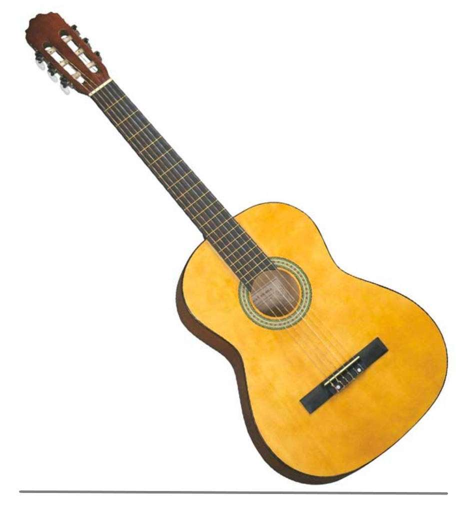
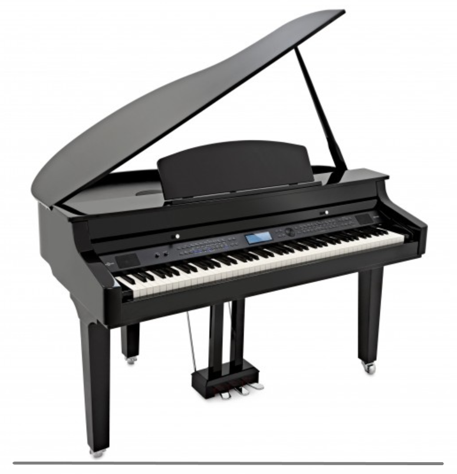
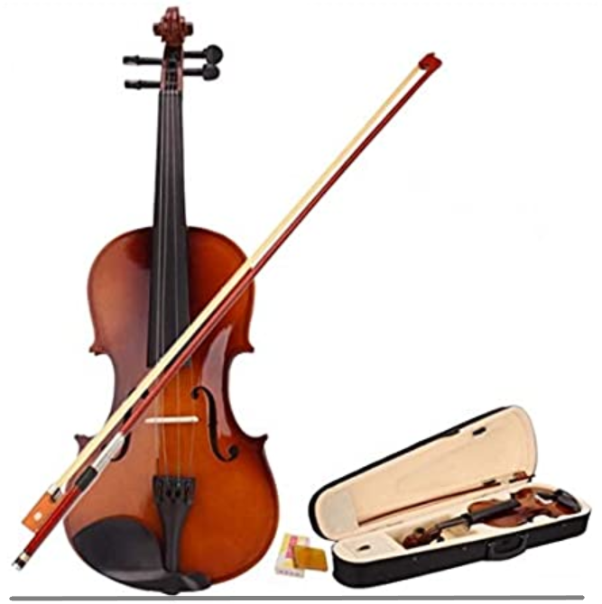

GUITARRA ELECTRO ACUSTICA FENDER
Precio: $5,800.00 pesos MXN
Descripcion del producto:
Guitarra clásica, tapa de abeto solido, fondo
y aros de fina agathis, brazo de caoba,
diapasón en hardwood, aros y fondo de agathis,
cuerdas D Addario, color negro.

Piano vertical 109 cm. Negro Brillante
Precio: $67,895.00 pesos MXN
Descripcion del producto:
Un excelente ejemplo de belleza natural, el
modelo JU109 es una combinación exquisita de
fabricación y tecnología de Yamaha que hacen de
él un instrumento perfectamente asequible y que
tocarlo sea un placer.

Violin San Antonio 3/4 Modelo SN-40034
Precio: $4,490.00 pesos MXN
Descripcion del producto:
Este modelo introductorio brinda a los principiantes
un instrumento que juega con un tono satisfactorio y,
al mismo tiempo, ofrece una durabilidad excepcional.
Cada instrumento está hecho a mano